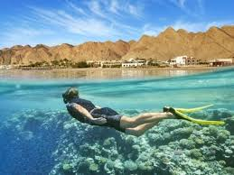
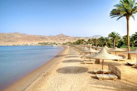
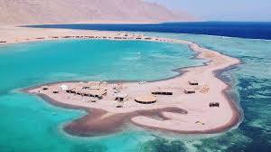
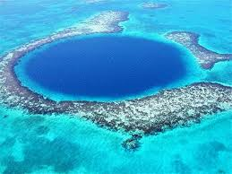
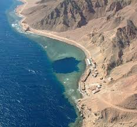

دهب
هي مدينة مصرية سياحيه تتبع محافظة جنوب سيناء
وتقع على خليج العقبة، وتبعد حوالي 100 كم
عن مدينة شرم الشيخ و87 كم عن مدينة نويبع، ولقد سُميت بهذا الاسم تيمناً بلون رمالها الذهبي. وتنقسم المدينة إلى
قسمين، الأول يقع جنوباً ويسمى قرية العسلة وتشتهر بالحياة البدوية البسيطة، والقسم
الثاني يقع شمالاً ويعد روح ونبض المدينة بسبب اشتماله على الأسواق التجارية
والأماكن الترفيهية، وتشتهر المدينة بشواطئها البكر الصافية
ومواقع الغطس الطبيعية الغنية بالشعاب المرجانية.



محمية أبو جالوم
تقع محمية أبو جالوم على خليج العقبة بمنطقة تسمى وادي الرساسة، وأعلنت كمحمية عام 1992.
تتميز المحمية بطبيعتها الخاصة و نظامها البيئي المتكامل الذي يجمع
ما بين البيئة الصحراوية والجبلية ومجموعة الوديان التي تتخللها، بالإضافة إلى بيئتها البحرية الغنية
بالشعاب المرجانية والأسماك الملونة، كما توجد بها حياة برية غنية بالحيوانات والقوارض والزواحف.


النشاطات السياحية
تتميز المدينة بنشاطاتها السياحية
المتميزة، حيث يرتادها هواة ركوب ا
لأمواج والمراكب الشراعية بسبب
سرعة الرياح نظراً لإحاطة الجبال بها من عدة جهات، مما يتسبب في ظهور الضغط المنخفض بأماكن والضغط المرتفع
بأماكن أخرى. كما يفد إليها هواة رياضة القفز بالمظلات، وتسلق الجبال، السفاري الذين
يرغبون في الاستمتاع بالطبيعة الجبلية والصحراوية والمناخية المعتدلة للمدينة.